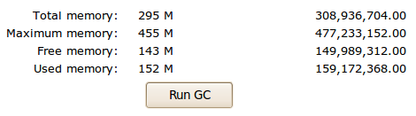

The JRE status page displays information on application's current memory consumption and threads.
The system will sample thread CPU usage for 2 (two) seconds to get approximate CPU utilization.
Java is a managed language and will automatically clean up used memory using Garbage collection (or GC for short).
 JRE Memory status
You can trigger garbage collection manually by clicking the Run GC button.
Thread information may be used to identify threads that are consuming too much CPU, which should prompt you that that particular code should be reviewed. In case when user's operation is known to run for a longer time (e.g. report generation), high CPU usage is normal.
For threads that are using a considerable amount of CPU, this screen allows you to expand the stack trace information of thread. Using stack trace, the CPU consuming code may be identified. You should pay attention when several threads are "stuck" in the same application code.